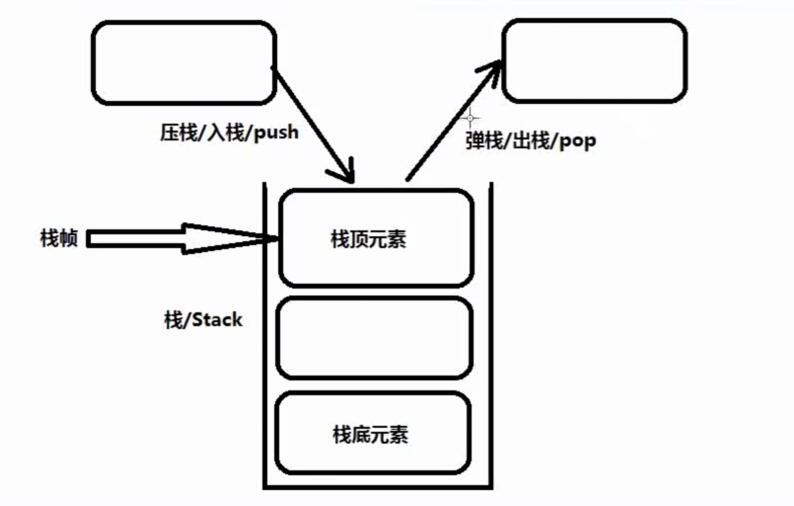

原文连接:https://www.cnblogs.com/ruigege0000/p/11495201.html
一、方法在执行过程中是如何分配内存的，内存是如何变化的?
1.方法只定义，不调用，是不会执行的，并且在JVM中也不会给该方法分配”运行所属“的内存空间，只有在调用这个方法的时候，才会动态的给这个方法分配所属的内存空间。
2.在JVM内存划分上有这样三个主要的内存空间（当然除了这三块之外还有其他的内存空间）；
（1）方法区内存；（2）堆内存；（3）栈内存；
3.关于栈数据结构：
（1）栈：stack，是一种数据结构
（2）数据结构反应的是数据的存储形态。
（3）数据结构是独立的学科，不属于任何编程语言的范畴，只不过在大多数编程语言中要使用数据结构。
（4）常见的数据结构：数组、队列、栈、链表、二叉树、哈希表/散列表
（5）Java在不精通数据结构和算法的前提下，也可以进行开发，因为java拥有强大的库
栈：
（1）栈帧永远指向栈顶元素
（2）栈顶元素处于活跃状态，其他元素静止
（3）术语：
压栈/入栈/push
弹栈/出栈/pop
（4）栈数据结构存储数据的特点是：先进后出，后进先出

4.方法代码片段存储在哪里？方法执行的时候执行过程中的内存是在哪里分配的？
（1）方法代码片段属于.class字节码文件的一部分，字节码文件在类加载的时候，将其放到了方法区之中，所以JVM中的三块主要的内存空间中方法区内存最先由数据，存放了代码片段
（2）代码片段虽然在方法区内存中只有一份，但是可以被重复调用，每一次调用这个方法的时候，需要给该方法分配独立的活动场所，在栈内存中分配。（栈内存中分配方法运行的所属内存空间）
5.方法在调用的手，会给该方法分配独立的内存空间，在栈中分配，此时发生压栈动作，方法执行结束之后，给该方法分配的内存空间全部释放，此时发生弹栈动作。
压栈是给该方法分配内存
弹栈是给该方法释放内存空间
6.局部变量在“方法体”中声明，局部变量运行阶段内存中在栈中分配。
二、源码：
3.博客园：https://www.cnblogs.com/ruigege0000/
4.欢迎关注微信公众号：傅里叶变换，后台回复”礼包“，获取大数据学习资料